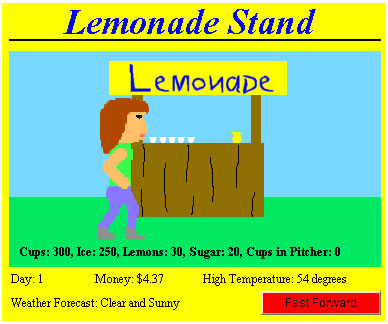
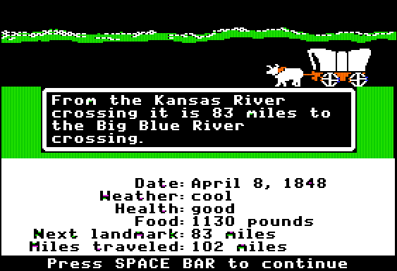
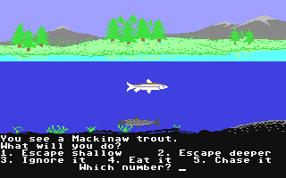
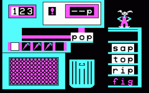
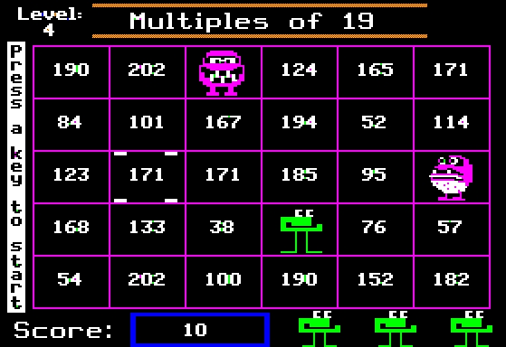
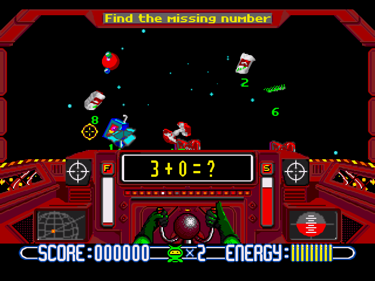
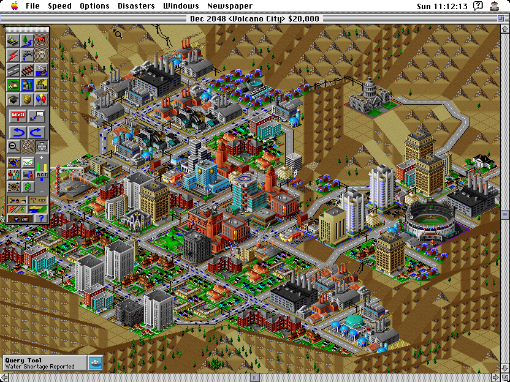
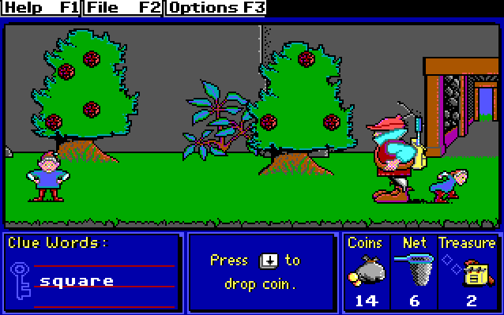

Educational Games
As the gaming industry was growing, a lot of games had been developed and a lot of genre were also gaining success. One of the first important genre of game are the educational games, which had the main purpose to help people to learn about certain subjects, expanding concepts, reinforce development, understand an historical event or culture or assist them to learn a skill as they play. Thanks to the advent of personal computing, the 1980s saw the evolution and commercialisation of this new kind of games.
These games were drawn from video arcade and console game methods, incorporating narrative and visual elements from popular culture, and they targeted primarily elementary-aged children. Companies like the Minnesota Educational Computing Corporation (MECC)1, The Learning Company2, were early pioneers, producing titles like Oregon Trail, Reader Rabbit, Number Munchers and Math Blaster
Lemonade Stand (1982)
Created in 1973 and brought to the Apple II platform in 1979, Lemonade Stand3 is one of the oldest and most popular educational games of all time the gameplay was very simple: players had to organize a lemonade stand, choosing the amount of ingredients to buy, how to advertise, and the price of a single lemonade. Despite a basic premise, it was actually teaching players complex lessons about business and economics and was one of the earliest to use the idea of a gaming platform to do so. Lemonade Stand, and other early economics-based games like M.U.L.E., had inspired many future games like Lemonade Empire, Lemonade Tycoon, Hot Dog Stand and Dope Wars etc.
The Oregon Trail (1985)
Oregon Trail4 has been one of the most played and remembered game of that period. At the first time this game was released for students of Minnesota during the 70s, but afterwards, during the 1985 it was released on Apple II. It was a successfull game and a lot of modifications and updates were made in it. Even if the gameplay and the graphics were very simple, the game was the first to show just how engaging a game with an educational context could be.
Odell Lake (1986)
Odell lake5 was developed in 1986 and it was a simulator game where the player had to personify one of the six species of fish living in the Odell Lake. The main goal of the player is to keep the fishes alive. MECC, the developer also responsible for Oregon Trail, later released Down Under. This game was for the purpose of teaching kids about ecosystems and wildlife and was one of the first science-focused educational games on the market.
Reader Rabbit (1986)
Reader Rabbit6 is among the most influential and successful educational games of all time. Beginning with the release of the original Reader Rabbit in 1986, the game has taught scores of toddlers and young students how to read and spell through simple but fun mini-games. Over the years, The Learning Company has added many more titles to the Reader Rabbit series, which continued to become popular educational titles in homes and schools today. Reader Rabbit was one of the first educational gaming brands to become a household name and with a new title for the Nintendo Wii announced in 2011, it remains a powerful force in the educational market today.
Munchers (1987)
As its obvious, munching numbers is a whole lot more fun than doing mathematical problems out of a math book. In this popular game, students have to “munch” all of the numbers that fit into a specific category. A correct answer yields a fun cut-screen. An incorrect one means getting eaten by a monster. Became popular during the 1980s and ’90s, the game was another major success for the MECC1 and later evolved into Math Munchers7, a title that’s still available today. Number Munchers8 was among the first to transform basic math problem solving into something students actually look forward to doing, a hallmark of many educational games today.
Math Blaster (1987)
Just as munchers added a fun element to math lessons, so did blaster. In fact, this popular concept yielded numerous later iterations, allowing students to blast everything from algebra to reading. Like Number Munchers8, Math Blaster9 helped turn boring math exercises into something students could look forward to, helping change the educational gaming scene for the better. The Blaster series of games was incredibly successful and it’s easy to find variations on the theme today that cover a wide range of topics and grade levels.
SimCity (1989)
SimCity10 was the brainchild of legendary game designer Will Wright11 and was the first of many successful games to be released by the Maxis software company12. Players take on the role of the mayor of a city, managing the day-to-day affairs of planning, spending, and allocating resources. Natural disasters, revolting citizens, and unexpected obstacles kept the game challenging, helping players build serious problem solving skills in the process. The recipient of numerous awards, SimCity proved that games did not only needed to be winnable but to be both fun and educational. Today, there are dozens of Sim titles that players can choose from and countless games inspired by the open-ended gameplay pioneered by the game.
Treasure Mountain! (1990)
Treasure Mountain!13 is part of The Learning Company’s2 incredibly successful Super Solvers series. Gameplay is pretty simple, as players climb a mountain, answering riddles, finding clues, and collecting treasures along the way. Puzzles focus on reading, critical thinking, and math. While somehow the game is incredibly addictive. The structure of Treasure Mountain! is very similar to a number of educational games and platforms today, which reward students with different levels and encourage them to collect items to advance.
External Links
- [Visited On 06/11/2014] MECC
- [Visited On 06/11/2014] The Learning Company
- [Visited On 06/11/2014] Lemonade Stand
- [Visited On 06/11/2014] The Oregon Trail
- [Visited On 06/11/2014] Odell Lake
- [Visited On 06/11/2014] Reader Rabbit
- [Visited On 06/11/2014] Munchers
- [Visited On 06/11/2014] Number Munchers
- [Visited On 06/11/2014] Math Blaster
- [Visited On 06/11/2014] SimCity
- [Visited On 06/11/2014] Will Wight
- [Visited On 06/11/2014] Maxis
- [Visited On 06/11/2014] Treasure Mountain!
- [Visited on 06/11/2014] msu.edu
- [Visited on 06/11/2014] ign.com
- [Visited on 06/11/2014] gamefaqs.com
- [Visited on 06/11/2014] myabandonware.com
- [Visited on 06/11/2014] giantbomb.com
- [Visited on 06/11/2014] gamefabrique.com
- [Visited on 06/11/2014] theregister.co.uk
- [Visited on 06/11/2014] myabandonware.com
All images are fair use intended.